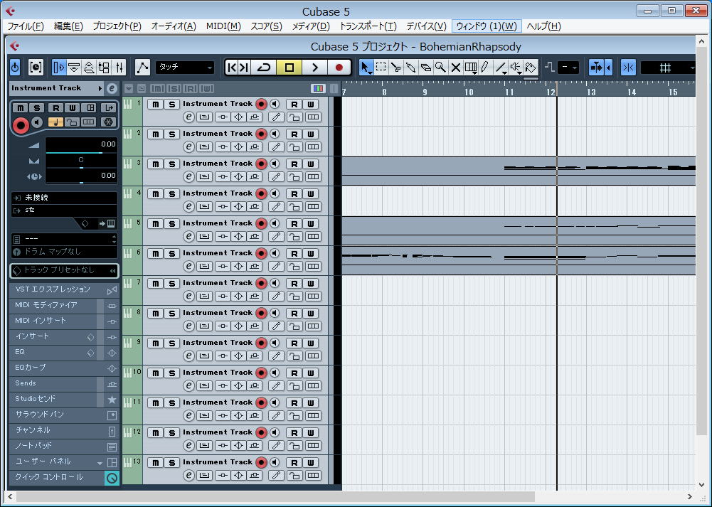

| TOP | weblog | TIPS | Works | リンク | 戻る |
| 複数トラックＳＭＦの再生設定（ＧＭ音源的使い方） 昔流行ったＧＳ音源打ち込みのSMFをCUBASEで開くと下の様になります。 なんもしていないのですべてのトラックには音源が設定されていません。 ＧＭ，ＧＳマルチ音源はＶＳＴでは今のところ見つかっていません。 ですので、素直に外部音源を使いましょう。  ＣＵＢＡＳＥは楽器毎、素晴らしくリアルな音源が揃っているのでそれを使いましょう。 プレイヤーでないのです、CUBASEは ・Advanced Music Production System ・高度な音楽制作システム なのですから。 |